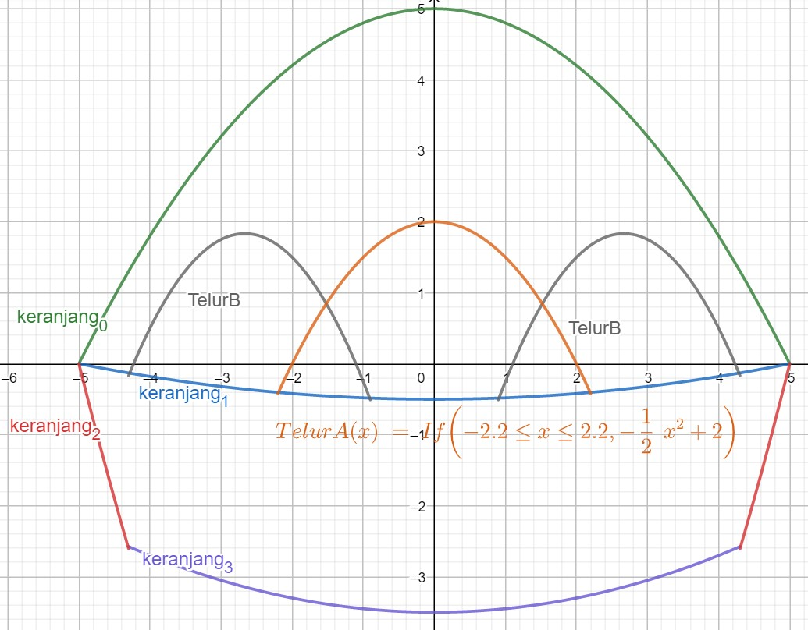

The celebration of Easter
14 Mei 2021 — Christopher Gijoh
Easter is one of the most significant commemoration celebrated by Christians. It is celebrated as a joyous holiday as it represents the fulfillment of the Old Testament, the victory from death, the belief in hope, and the revelation of God's salvation plan for all of humanity. In the New Testament of the Bible, the crucifixion of Jesus Christ is directly connected to the Jewish Passover celebration in both timing and theology (Matthew 26:2). That is why Easter is celebrated on Sunday, but the date itself is not fixed and is determined on the full moon after the spring equinox. The Easter holiday concludes the series of events and holidays that begins with Lent (40-day period of fasting, prayer, and sacrifice) and ends with Holy Week, which includes Holy Thursday (the celebration of Jesus' Last Supper with his 12 Apostles, also known as Maundy Thursday), Good Friday (on which Jesus' crucifixion is observed) and Easter Sunday (Hillerbrand, 2021).
In most countries, the name for Easter is derived from the Greek word "Pesach" or “Pascha”, and not Easter. But in English-speaking countries, the word Easter originated from an Anglo-Saxon or Germanic goddess of spring named Eostre, long before the advent of Christianity. According to the 8th-century author of Ecclesiastical History of the English People, St. Bede the Venerable, the English people use the word Eosturmonath or Eostre-Month after the goddess to mark the fourth month (the spring equinox) and that the English people celebrated feasts in her honor (History.com Editors, 2021). Since pre-historic times, people have celebrated the equinoxes and the solstices as sacred times. The spring equinox is a day where the amount of dark and the amount of daylight is identical, it tells that winter is ending because the daytime and the nighttime have come back into balance. People at that time mapped their whole life according to the patterns of nature. Following the advent of Christianity, the Easter period became associated with the resurrection of Christ. In the first couple of centuries after Jesus's life, feast days in the new Christian church were attached to old pagan festivals. Spring festivals with the theme of new life, fertility, and relief from the cold of winter became connected explicitly to Jesus having conquered death by being resurrected after the crucifixion (Sando, 2019).
Apart from Easter, there are other Christian holidays celebrated throughout the year, including Advent, Christmas, Holy Week, and Pentecost. Feast days events like the birth of Christ and Easter are celebrated joyously, while fast days like the Lent period are moments for self-reflection and repentance (Christian Holidays, 2021). In contrast to Easter, the feast day Christmas commemorates the birth of Jesus on December 25.
Although easter is a religious Christian holiday, some of its symbols and traditions, such as Easter eggs are derived from pagan traditions according to history. The egg is seen as an ancient symbol of fertility and new life. From a Christian perspective, Easter eggs are said to represent Jesus’ emergence from the tomb, resurrection, and new life. The tradition of decorating eggs for Easter dates back to at least the 13th century. At the time, the egg was a forbidden food during the Lent period. People would paint and decorate the eggs to mark the end of the Lent period. Many of the eggs were brightly painted with colors. The color red for example symbolizes the blood of Christ (History.com Editors, 2021). Nowadays, Easter eggs are painted with related scenes from the Bible, such as the death and the resurrection of Jesus.
Easter is celebrated differently across the world. Each part of the world has its very own tradition, and every Easter symbol has its origin. The celebration of Easter always commemorates the same event, in that the celebration essentially centers on the same meaning: a remembrance and commemoration of the death of Jesus Christ the Savior. Whether it be a different symbol or a different procedure, Easter should always be celebrated with an understanding and praise of the significance in Jesus’ resurrection as in 1 Peter 1:3-4. Using the symbols to celebrate Easter only adds joy and uniqueness, it does not reduce the meaning of Easter. Regardless of the way it is celebrated, the most important thing is to understand the meaning of the crucifixion is as a step of atoning sins for all humanity. The crucifixion and resurrection of Jesus is for all to enjoy, no matter what the differences are (DLM Christian Lifestyle, 2021). Therefore, the commemoration of Easter is also a moment to build unity and integrity in diversity by valuing and respecting the different ways Easter is celebrated.
The belief of Christianity is based on the crucifixion and resurrection of Jesus Christ to save the world and bring new life. Because of that, Christians celebrate Easter as a reminder of God’s grace and hope in Christ (1 Corinthians 15:14 and 17). (DLM Christian Lifestyle, 2021) Easter symbols used to celebrate Easter such as Easter eggs, bunny, and other only adds joy and uniqueness, it does not reduce the meaning of Easter. As such, Christians should value and respect the different ways Easter is celebrated.
Bibliography
Christian holidays. (2021, March 21). ReligionFacts. https://religionfacts.com/christianity/holidays
DLM Christian Lifestyle. (2021, March 28). What is EASTER & why do we celebrate it as CHRISTIANS? YouTube. https://www.youtube.com/watch?v=O8vsGMO5RgE
Hillerbrand, H. J. (2021, March 31). Easter. Encyclopedia Britannica. https://www.britannica.com/topic/Easter-holiday
History.com Editors. (2021, March 24). Easter symbols and traditions - easter bunny, easter eggs & christianity. HISTORY. https://www.history.com/topics/holidays/easter-symbols
History.com Editors. (2021, April 2). Easter - dates, easter eggs & easter bunny. HISTORY. https://www.history.com/topics/holidays/history-of-easter
Sando, A. (2019, June 26). Paskah - Arti, Makna, Asal Usul, dan Ibadah. Tuhanyesus.org. https://tuhanyesus.org/paskah
Analisis grafik fungsi kuadrat dalam gambar simbol atau ornamen telur paskah
Fungsi telur A - Persamaan fungsi kuadrat
-
Persamaan fungsi kuadrat
$$f\left(x\right)=-\frac{1}{2}x^2+2,\ \ domain\ -2\le x\le2,\ x\ \in\mathbb{R}$$ $$a=-\frac{1}{2},\ b=0,\ c=2$$
-
Grafik fungsi kuadrat
 -
Penyajian fungsi kuadrat menggunakan tabel
x -2 -1 0 1 2 f(x) 0 1,5 2 1,5 0
Unsur-unsur fungsi kuadrat
-
Titik potong sumbu Y, x = 0
$$\begin{align*} f(x)&=-\frac{1}{2}x^2+2 \\ f(0)&=-\frac{1}{2}(0)^2+2 \\ f(0)&=2\rightarrow(0,\ 2) \end{align*}$$ Titik potong sumbu Y adalah \((0, 2)\)
-
Titik potong sumbu X, y = 0
$$\begin{align*} f(x)&=-\frac{1}{2}x^2+2=0 \\ 0&=-\frac{1}{2}x^2+2 \\ 0&=-x^2+4\rightarrow kedua\ sisi\ dikali\ 2 \\ -4&=-x^2 \\ 4&=x^2\rightarrow kedua\ sisi\ dikali-1 \\ x&=\sqrt4 \\ x_1&=2,\ \ x_2=-2 \end{align*}$$ Titik potong sumbu X adalah \((2, 0)\) dan \((-2, 0)\)
-
Sumbu simetri
$$\begin{align*} x&=\frac{-b}{2a} \\ x&=\frac{-(0)}{2(-\frac{1}{2})} \\ x&=0 \end{align*}$$
Sumbu simetri: \(x = 0\)
-
Nilai maksimum dan minimum (y)
$$x_p=sumbu\ simetri,\ y_p=f(x_p)$$ Karena nilai \(x_p\) sudah diketahui, maka: $$\begin{align*} y_p&=f(x_p)=-\frac{1}{2}{x_p}^2+2 \\ y_p&=-\frac{1}{2}(0)^2+2 \\ y_p&=0+2 \\ y_p&=2 \end{align*}$$ Nilai maksimum \(yp = 2\) Nilai minimum dari tabel berdasarkan daerah asal \(-2\le x\le2\) adalah: \(0\)
-
Titik balik maksimum atau puncak
$$(x_p,y_p);\ x_p=sumbu\ simetri,\ y_p=f(x_p)$$ Karena nilai \(x_p\) sudah diketahui, maka: $$\begin{align*} y_p&=f(x_p)=-\frac{1}{2}{x_p}^2+2 \\ y_p&=-\frac{1}{2}(0)^2+2 \\ y_p&=0+2 \\ y_p&=2 \end{align*}$$ Titik balik maksimum: \((0, 2)\)
-
Daerah hasil fungsi
$$\begin{align*} nilai\ minimum&\le y\le nilai\ maksimum\newline {0}&\le{y}\le{2} \end{align*}$$
Hubungan grafik dengan koefisien dan diskriminan
Persamaan fungsi kuadrat: $$\begin{align*} f(x)=-\frac{1}{2}x^2+2 \\ a=-\frac{1}{2},\ b=0,\ c=2 \end{align*}$$
-
Pengaruh nilai a terhadap grafik fungsi kuadrat
Koefisien \(x^2\) yaitu \(a=-\frac{1}{2}\) negatif sehingga grafik terbuka ke bawah dan titik puncak mengarah ke atas
-
Pengaruh nilai b terhadap grafik fungsi kuadrat
Nilai \(b = 0\), maka sumbu simetri grafik berada di tengah (\(x = 0\))
-
Pengaruh nilai c terhadap grafik fungsi kuadrat
Nilai konstanta c mempengaruhi titik potong grafik terhadap sumbu Y. Karena nilai c adalah \(2\) dan \(c > 0\), grafik memotong sumbu Y positif
-
Pengaruh nilai a dan b terhadap grafik fungsi kuadrat
Nilai a negatif dan nilai b adalah \(0\), \(\frac{-b}{2a}\) menghasilkan 0 sehingga titik puncak berada di sumbu Y
-
Pengaruh nilai diskrimininan terhadap grafik fungsi kuadrat
$$\begin{align*} D&=b^2-4ac \\ D&=0^2-4(-\frac{1}{2})(2) \\ D&=0+4 \\ D&=4 \end{align*}$$ \(D = 4\) artinya grafik memotong sumbu X pada dua titik yang berbeda dan memiliki dua akar berbeda. $$f(x)=-1/2\ x^2+2,\ domain\ -2\le x\le2,\ x\ \in\mathbb{R}$$
Biblical Studies, PPKN, Matematika